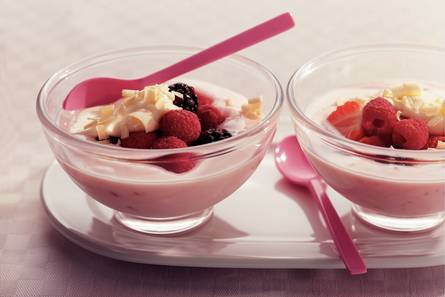

1. In kom aardbeien, frambozen en bramen voorzichtig door elkaar scheppen.
2. Boven steelpan 100 g chocolade in stukjes breken.
3. Steelpan in pan met kokend water hangen en chocolade al roerend laten smelten.
4. In andere kom slagroom bijna stijf kloppen.
5. Gesmolten chocolade er voorzichtig door spatelen.
6. Van rest van chocolade met dunschiller krullen schaven.
7. Yoghurt over vier coupes verdelen en fruit erop leggen.
8. Chocoladeroom erop scheppen. Garneren met chocoladekrullen.
Tip U kunt een beetje kaneel over de coupe strooien